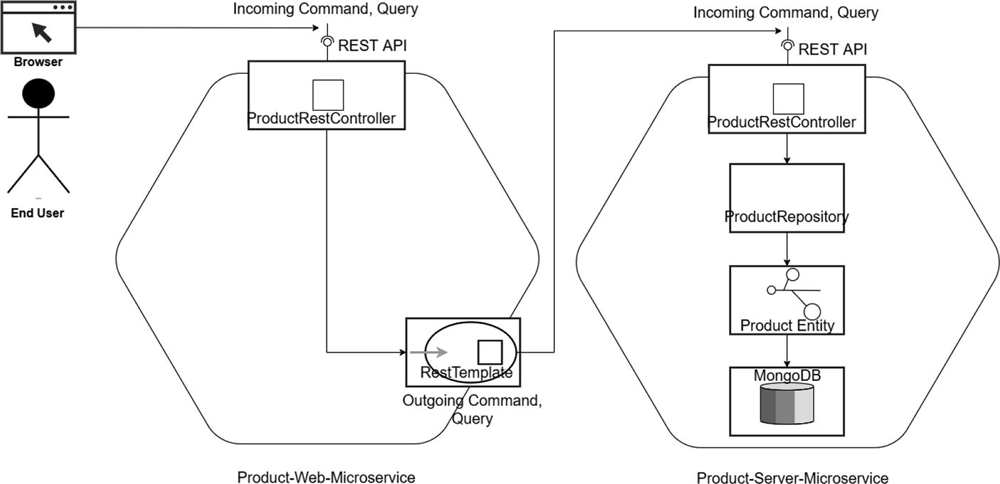
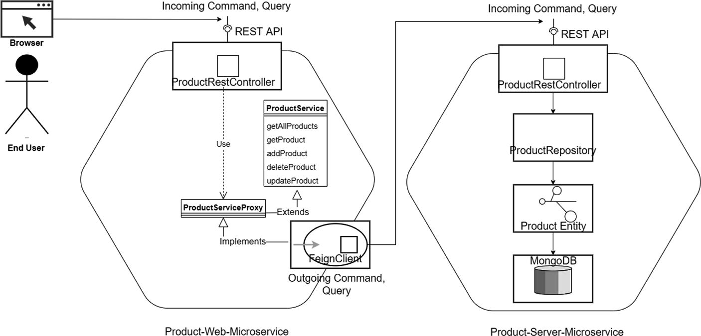
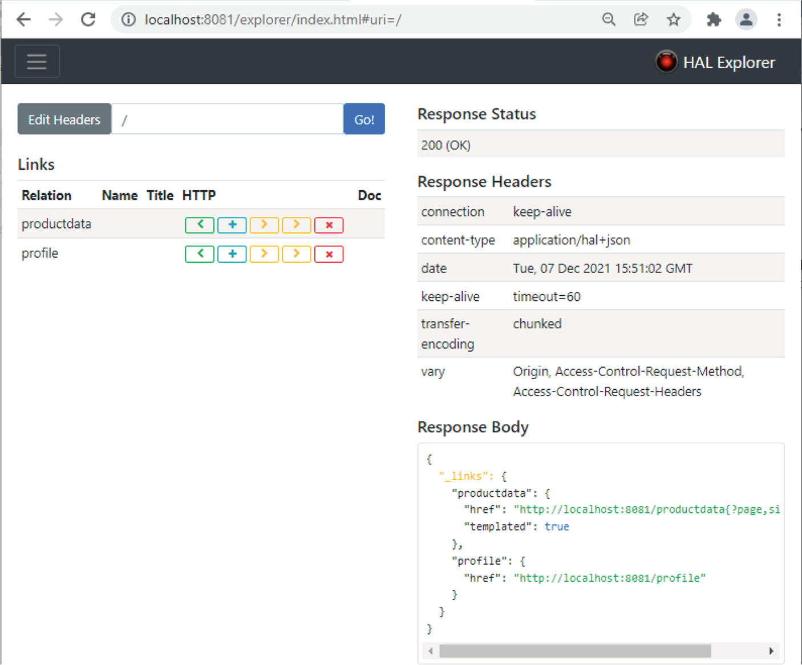

NBCRA 45, Christbin, Thiruvananthapuram, Kerala, India
You coded your first and simplest microservice in the last chapter. That example used a simple data structure as an in-memory database. This chapter extends that example by creating a few more microservices, each one in increasing order of complexity. This will enable you to build on your prior learnings. You will interact with a few real databases and firm up your knowledge of the ports and adapters architecture introduced in Chapter 1.
This chapter is fully hands-on, but the examples are still simple, so you don’t have to understand complex business or entity relationships. Instead, the examples emphasize on learning technologies and architecture variations.
This chapter covers the following concepts, each with running examples:
First, you will enhance the microservice example from the previous chapter to interact with a MongoDB.
I introduce the Spring Cloud next.
I move on to a discussion of HAL and HATEOAS.
As a final example, you will implement a HATEOAS-based microservice using Spring Boot.
Microservices Using MongoDB and RestTemplate
As mentioned, you will enhance the microservice you created in the last chapter. You will have two microservices—a consumer and a provider microservice—communicating each other using the REST protocol. The provider microservice also interacts with a NoSQL database, MongoDB.
Design the Microservices
This example uses the hexagonal microservice design depicted in Figure 1-13 in Chapter 1. This is shown again in Figure 2-1.

A model diagram connects the end user and browser to product-web-microservice via incoming command or query, rest A P I, product rest controller, and outgoing command or query with rest template, and product-service-microservice via incoming command or query, rest A P I, controller, product repository, product entity, and Mongo D B.
Figure 2-1
Consumer and provider microservice design
Both of the microservices shown in Figure 2-1 use HTTP ports at the REST interfaces, which are specification of how a user’s browser or some other HTTP client can use the application core. These ports (interfaces) belong inside the business logic of the respective microservices as REST controllers. An adapter is provided by Spring runtime, which provides the functionality promised by the REST interface. A request from the browser will hit the Product Web microservice, which is the consumer microservice. The Product Web microservice doesn’t perform any business logic; instead, it delegates the calls to the Product Server microservice, which is the provider microservice. The objective of keeping the Product Web microservice simple is to demonstrate how to initiate inter-microservice communication so that you can use and extend this template for real-world cases.
The RestTemplate in the Product Web microservice is another port, which again is nothing more than a specification on how it is used by the application core. A concrete-driven adapter that implements the RestTemplateport is injected into the application core by Spring wherever and wherever the port is required (type-hinted).
The Product entity fulfills the application core in the Product Server microservice. Here again, I avoided the typical layering of service and component stereotype classes to keep the overall complexity of the example simple.
ProductRepository is the third port used by the Product Server microservice. The purpose of the Product Server microservice is to persist data. So you create a persistence interface that meets its needs, with methods to do CRUD operations in a NoSQL collection using the ID of the entity. At that point, whenever and wherever the application needs to execute CRUD operations, the application core will need an object that implements the persistence interface that you defined, which is supplied by Spring runtime.
Code Organization
The source code for this book is available on GitHub via the book’s product page, located at www.apress.com/9798868805547. The code for the example is organized as shown in Listing 2-1, inside the ch02\ch02-01 folder. This follows the standard Maven structure, so pom.xml is in the root of the directory.
├── 01-ProductServer
│ ├── pom.xml
│ └── src
│ └── main
│ ├── java
│ │ └── com
│ │ └── acme
│ │ └── ecom
│ │ └── product
│ │ ├── EcomProductMicroApp.java
│ │ ├── InitComponent.java
│ │ ├── controller
│ │ │ └── ProdRestControl.java
│ │ ├── model
│ │ │ └── Product.java
│ │ └── repository
│ │ ├── ProductRepository.java
│ │ └── ProdRepConfig.java
│ └── resources
│ ├── application.properties
│ └── log4j2-spring.xml
├── 02-ProductWeb
│ ├── pom.xml
│ └── src
│ └── main
│ ├── java
│ │ └── com
│ │ └── acme
│ │ └── ecom
│ │ └── product
│ │ ├── EcomProdMicroApp.java
│ │ ├── InitComponent.java
│ │ ├── controller
│ │ │ ├── ProdRestControl.java
│ │ │ └── ProdRestConfig.java
│ │ └── model
│ │ ├── Product.java
│ │ └── ProductCategory.java
│ └── resources
│ ├── application.properties
│ ├── log4j2-spring.xml
│ └── static
│ ├── css
│ │ ├── app.css
│ │ └── bootstrap.css
│ ├── js
│ │ ├── app.js
│ │ ├── controller
│ │ │ └── product_controller.js
│ │ └── service
│ │ └── product_service.js
│ └── product.html
└── pom.xml
Listing 2-1
Spring Boot Source Code Organization
Note
The names of a few of the Java classes in Listing 2-1 has been shortened for formatting purposes.
The ch02\ch02-01 folder contains the source code for the consumer and provider microservices. The topmost folder also contains scripts that will help you build the microservices together. There are also scripts in this folder to clean up the projects at the end.
Understanding the Code
Let’s look at the provider microservice—the Product Server microservice—first. Listing 2-2 starts with the REST-capable HTTP port, using a Spring RestController.
@RestController
public class ProductRestController {
@Autowired
private ProductRepository productRepository;
@RequestMapping(value = "/products",
method = RequestMethod.GET,
produces = {MediaType.APPLICATION_JSON_VALUE})
public ResponseEntity<List<Product>> getAllProducts() {
REST Based HTTP Port for getAllProducts Product Server (ch02\ch02-01\01-ProductServer\src\main\java\com\acme\ecom\product\controller\ProductRestController.java)
getAllProducts is a Java method that will return a list of all products in the MongoDB database, defined through an abstract protocol and the format of delivery declared in the HTTP-based REST port. A concrete implementation of this port is then injected (or used to intercept) by Spring and used in the Controller edge in the runtime. They translate the JSON formatted Request data payload from the HTTP delivery channel into a getAllProducts method call in the application core. To retrieve the products, getAllProducts delegates calls to the driven port, ProductRepository.
The remainder of the implementation of the REST controller in the Product Server microservice is very similar to the code in Listing 1-4 in Chapter 1 (with the single exception that instead of the in-memory database, the ProductRepositoryport is used to interact with a MongoDB repository), so I do not repeat the full code here.
This example introduces the abstract port to interact with the MongoDB, as shown in Listing 2-3.
Abstract Port to MongoDB Repository (ch02\ch02-01\01-ProductServer\src\main\java\com\acme\ecom\product\repository\ProductRepository.java)
Since this port extends MongoRepository, all of the default CRUD method declarations are inherited by default. Therefore, you need to only declare the custom methods—findByCode in this example.
The code for the main class of the Product Server microservice is shown in Listing 2-4.
@SpringBootApplication
public class EcomProductMicroserviceApplication {
public static void main(String[] args) {
SpringApplication.run(
EcomProductMicroserviceApplication.class, args);
}
}
Listing 2-4
Product Server Microservice Main class (ch02\ch02-01\01-ProductServer\src\main\java\com\acme\ecom\product \EcomProductMicroserviceApplication.java)
Listing 2-5 shows the Product Server microservice configuration file.
The Product Server Microservice Config File (ch02\ch02-01\01-ProductServer\src\main\resources\application.properties)
This URL points to the MongoDB database.
Next, you will look at the consumer microservice, that is, the Product Web microservice. Listing 2-6 shows the REST-capable HTTP port, using a Spring RestController.
@RestController
public class ProductRestController{
@Value("${acme.PRODUCT_SERVICE_URL}")
private String PRODUCT_SERVICE_URL;
@Autowired
private RestTemplate restTemplate;
@RequestMapping(value = "/productsweb",
method = RequestMethod.GET,
produces = {MediaType.APPLICATION_JSON_VALUE})
public ResponseEntity<List<Product>> getAllProducts() {
ParameterizedTypeReference<List<Product>>
responseTypeRef = new ParameterizedTypeReference<
List<Product>>() {};
ResponseEntity<List<Product>> entity =
restTemplate.exchange(PRODUCT_SERVICE_URL,
HttpMethod.GET, (HttpEntity<Product>) null,
responseTypeRef);
List<Product> productList = entity.getBody();
return new ResponseEntity<List<Product>>(productList,
HttpStatus.OK);
}
}
Listing 2-6
REST Based HTTP Port for getAllProducts Product Web (ch02\ch02-01\02-ProductWeb\src\main\java\com\acme\ecom\product\controller\ProductRestController.java)
The value for PRODUCT_SERVICE_URL is configured in application.properties to point to the URL for the provider microservice, as follows:
The adapter to realize the inter-microservice communication is defined in the Product Web microservice by defining the RestTemplate configured in Spring in the configuration class, as shown in Listing 2-7.
return new RestTemplate(Arrays.asList(converter));
}
}
Listing 2-7
REST Template Configuration in Product Web ch02\ch02-01\02-ProductWeb\src\main\java\com\acme\ecom\product\controller\ProductRestControllerConfiguration.java)
From now on, whenever the Product Web microservice needs to communicate to the external API of the Product Server microservice, you need an object that implements the RestTemplate interface that you defined, and Spring provides you with that.
The rest of the implementation of the Product Web microservice REST controller is shown in Listing 2-8.
return new ResponseEntity<Product>(updatedProduct,
HttpStatus.OK);
}
}
Listing 2-8
REST based HTTP Port for CRUD methods of Product Web (ch02\ch02-01\02-ProductWeb\src\main\java\com\acme\ecom\product\controller\ProductRestController.java)
Given a productId, the getProduct method will retrieve the details of a specific product. addProduct will create a new product and deleteProduct will remove a product from the MongoDB database. updateProduct will update a product with a new set of values.
Build and Run the Microservice
The ch02\ch02-01 folder contains the Maven scripts required to build these examples. As a first step, you need to bring up the MongoDB server. Refer to Appendix B to learn how to set up a MongoDB server and bring it up. You need to execute the commands shown in Listing 2-9 to bring up MongoDB.
Alternatively, you can take two command terminals and change the directory to the top-level folder of the microservices. First, build and run the Product Server microservice using the make.sh and the run.sh scripts, as shown in Listing 2-11.
binildass-MacBook-Pro:02-ProductWeb binil$ sh make.sh
...
binildass-MacBook-Pro:02-ProductWeb binil$ sh run.sh
[INFO] Scanning for projects...
[INFO]
...
2023-12-20 08:23:46 INFO SpringApp.log:653 - No active ...
2023-12-20 08:23:47 INFO InitComponent.init:37 - Start
2023-12-20 08:23:47 DEBUG InitComponent.init:39 - Do Nothing
2023-12-20 08:23:47 INFO InitComponent.init:41 - End
2023-12-20 08:23:47 INFO StartupInfoLogger.logStarted:56 - Started EcomProduct...
Listing 2-12
Building and Running the Product Web Microservice Using Scripts
Now that both microservices are up and running, you can test the microservices.
Testing the Microservices
Once both microservices are up and running, you can inspect your MongoDB server using the mongo terminal to make sure the Product Server microservice has inserted a few products into the MongoDB server during the microservice startup (see Listing 2-13). Refer to Appendix B to learn how to use the mongo terminal.
When all is set, you can access the web application using your browser and pointing to http://localhost:8080/product.html.
To test the CRUD operations, follow the instructions described in the subsection, “Test the Microservices Using UI” in the last section of Chapter 1, titled “Your First Java Microservice.”
Microservices Using Spring Cloud
Spring Cloud is built over Spring Boot. Spring Cloud provides many common patterns in distributed, microservices ecosystems that can help you integrate the core services as a set of loosely coupled services. Spring Cloud also provides many powerful tools that enhance the behavior of Spring Boot applications to implement those patterns. This section looks at one such pattern with code so that you can appreciate the benefits it provides.
Design the Microservices
This section slightly modifies the previous microservice example to introduce Spring Cloud.

A model diagram connects the end user and browser to product-web-microservice via incoming command, rest A P I, product rest controller, product service proxy, product service, and outgoing command with feign client, and product-service-microservice via incoming command, rest A P I, controller, product repository, product entity, and Mongo D B.
Figure 2-2
Microservices design with Spring Cloud Feign client
As explained in the previous example, in both microservices shown in Figure 2-2, you use HTTP ports at the REST interfaces, which specify how a user’s browser or another HTTP client can use the application core. These ports (interfaces) belong inside the business logic of the respective microservices as REST controllers. Requests from the browser will hit the Product Web microservice, which is the consumer microservice. The Product Web microservice doesn’t perform any business logic; instead, it delegates calls to the Product Server microservice, the provider microservice.
The FeignClient port in the Product Web microservice is another port, which again is nothing more than a specification of how it is used by the application core. A concrete driven adapter that implements the FeignClient port is injected into the application core by Spring Cloud wherever and wherever the port is required (type-hinted).
The Product entity fulfills the application core in the Product Server microservice.
The rest of the ports and adapters in the Product Server microservice function exactly similar as the previous example.
Understanding the Code
The source code for this book is available on GitHub via the book’s product page, located at www.apress.com/9798868805547. The source code for this example is organized inside the ch02\ch02-02 folder. The source code is similar to the previous example. The Product Server microservice is similar; however, there are a few changes in the Product Web microservices, which you look at here. Instead of the RestTemplate, this example uses FeignClient. Listing 2-14 shows how to specify FeignClient.
public interface ProductService {
@RequestMapping(value = "/products",
method = RequestMethod.GET,
produces = MediaType.APPLICATION_JSON_VALUE)
public ResponseEntity<Resources<Resource<Product>>>
getAllProducts();
@RequestMapping(value = "/products/{productId}",
method = RequestMethod.GET,
produces = MediaType.APPLICATION_JSON_VALUE)
public ResponseEntity<Resource<Product>> getProduct(
@PathVariable("productId") String productId);
@RequestMapping(value = "/products",
method = RequestMethod.POST,
produces = MediaType.APPLICATION_JSON_VALUE)
public ResponseEntity<Resource<Product>> addProduct(
@RequestBody Product product);
@RequestMapping(value = "/products/{productId}",
method = RequestMethod.DELETE,
produces = MediaType.APPLICATION_JSON_VALUE)
public ResponseEntity<Resource<Void>> deleteProduct(
@PathVariable("productId") String productId);
@RequestMapping(value = "/products/{productId}",
method = RequestMethod.PUT,
produces = MediaType.APPLICATION_JSON_VALUE)
public ResponseEntity<Resource<Product>> updateProduct(
@PathVariable("productId") String productId ,
@RequestBody Product product);
}
Listing 2-14
The Service Interface for the Product Server Microservice (ch02\ch02-02\02-ProductWeb\src\main\java\com\acme\ecom\product\api\ProductService.java)
The first thing you’ll do here is define a service interface, as shown in Listing 2-14. Based on this service interface, you can declare an abstract FeignClient, which is a declarative web service client. The nice thing about using Feign is that you don’t have to write any code for calling the service, other than an interface definition, as shown in Listing 2-15.
public interface ProductServiceProxy extends ProductService{
}
Listing 2-15
The Feign Client Interface for the Product Server Microservice (ch02\ch02-02\02-ProductWeb\src\main\java\com\acme\ecom\product\client\ProductServiceProxy.java)
A name must be specified for all clients, which is the name of the service with the optional protocol prefix.
You then declare this FeignClient in pom.xml, as shown in Listing 2-16.
<dependencies>
<dependency>
<groupId>org.springframework.cloud</groupId>
<artifactId>
spring-cloud-starter-openfeign
</artifactId>
<version>4.1.0</version>
</dependency>
</dependencies>
Listing 2-16
The Feign Client Dependency in Maven (ch02\ch02-02\02-ProductWeb\pom.xml)
You can use application properties to configure Feign clients; however, I am keeping this example simple, without configuring the Feign client with such details. See Listing 2-17.
feign:
client:
config:
default:
connectTimeout: 5000
readTimeout: 5000
loggerLevel: basic
Listing 2-17
The Ribbon Configuration (ch02\ch02-02\02-ProductWeb\src\main\resources\application.properties)
Build and Run the Microservice
The ch02\ch02-02 folder contains the Maven scripts required to build the examples. As a first step, you need to bring up the MongoDB server. Refer to Appendix B to learn how to set up a MongoDB server and bring it up. You need to execute the commands shown in Listing 2-18 to bring MongoDB up.
Next, take two command terminals and change the directory to the top-level folder of both microservices. Then, build and run the Product Server microservice using the make.sh and the run.sh scripts, as shown in Listing 2-19.
(base) binildass-MacBook-Pro:02-ProductWeb binil$ sh make.sh
[INFO] Scanning for projects...
...
2023-12-20 09:32:00 INFO InitComponent.init:37 - Start
2023-12-20 09:32:00 DEBUG InitComponent.init:39 - Do Nothing.
2023-12-20 09:32:00 INFO InitComponent.init:41 - End
2023-12-2009:32:00 INFO Start.log:56 - Started EcomProduct...
Listing 2-20
Build and Run Product Web Microservice Using Scripts
Now that both microservices are up and running, you can now test the microservices.
Testing the Microservices
Once both microservices are up and running, you can access the web application using your browser. Point to this URL:
http://localhost:8080/product.html
To test the CRUD operations, follow the instructions described in the subsection, “Test the Microservices Using UI” in the last section of Chapter 1, titled “Your First Java Microservice.”
Now that you have experienced the flavor of Spring Boot and Spring Cloud, the next section looks at one more important concept in REST-based microservices—HATEOAS and HAL.
HATEOAS and HAL
Hypermedia as the Engine of Application State (HATEOAS) is a constraint of the REST application architecture, which decouples the client from the server. Such a decoupling enables server functionality to evolve independently. The following section investigates this more, again with working examples.
HATEOAS Explained
HATEOAS advocates a user agent that implements HTTP to make an HTTP request of a REST API through a simple URL. Once bootstrapped, all subsequent requests the user agent may make are discovered inside the responses to each request. The media types used for these representations, and the link relations each response may contain, are standardized. The client transitions through the application states by selecting from the links within a representation or by manipulating the representation in other ways afforded by its media type. In other words, the resources available and the actions applicable to these resources are discovered, and subsequent transitions are orchestrated accordingly. In this way, RESTful interaction is driven by hypermedia, rather than out-of-band information.
As an example, the GET request in Listing 2-21 fetches a product resource, requesting details in a JSON representation.
GET /productdata/61a7a51467964f330f6560fa HTTP/1.1
The response contains the follow-up link to buy the product. Later, when the stock of this product SKU is zero, the “Buy” link may not be available, or to rephrase, in its current state, the Buy link is not available. Hence, the term Engine of Application State. The possible actions vary as the state of the resource varies.
HATEOS thus provides context-driven responses using hypermedia controls, which indicate which operations are possible, or for that matter not possible, based on the presence or absence of these links. This helps avoid transporting state-related fields between servers and clients.
HAL Explained
Hypertext Application Language (HAL) is an Internet standard (a “work in progress”) convention for defining hypermedia such as links to external resources within JSON or XML data. HAL is structured to represent elements based on the concepts of Resources and Links. Resources consist of URI links, embedded resources, your standard JSON or XML data, and non-URI links. Links have a target URI, the name of the link (referred to as rel), and optional properties designed to be mindful of deprecation and content negotiation.
To summarize, the HAL model revolves around two simple concepts.
Resources, which contain:
Links to relevant URIs
Embedded resources
State
Links:
A target URI
A relation, or rel, to the link
A few other optional properties to help with depreciation, content negotiation, and so on
With that little introduction, you can now get into the action with some code.
Microservices Using HATEAOS and HAL
This section uses a working example to show how things fit together. You will modify the microservices example to demonstrate both HATEOAS and HAL.
Design the Microservices
This example reuses the hexagonal microservice view shown in Figure 2-1 and described earlier. A few of the differences are as follows:
The Product Web microservice will be enhanced to exhibit HATEOAS capability.
The Product Server microservice will be enhanced to demonstrate HAL.
You will be leveraging the Spring HATEOAS project for creating hypermedia-driven REST web services. The intention is to easily create REST representations that follow the principle of HATEOAS so the API can guide the client through the application by returning relevant information about the next potential steps, along with each response.
Code Organization
The source code for this book is available on GitHub via the book’s product page, located at www.apress.com/9798868805547.. The code for this example is organized as shown in Listing 2-22, inside the ch02\ch02-03 folder. This follows the standard Maven structure, so pom.xml is in the root of the directory. Code organization for the relevant portion of the Product Web microservice alone is shown, since you already saw the Product Server microservice code.
.
├── 01-ProductServer
│ ├── ...
├── 02-ProductWeb
│ ├── pom.xml
│ └── src
│ └── main
│ ├── java
│ │ └── com
│ │ └── acme
│ │ └── ecom
│ │ └── product
│ │ ├── EcomProdWebMicroApp.java
│ │ ├── InitComponent.java
│ │ ├── controller
│ │ │ └── ProdController.java
│ │ ├── hateoas
│ │ │ └── model
│ │ │ └── Product.java
│ │ └── model
│ │ └── Product.java
│ └── resources
└── pom.xml
Listing 2-22
Spring Boot Source Code Organization
One difference you want to note is the hateoas subfolder in the Product entity model. I will explain the reason for this folder in the next section.
Understanding the Code
Let’s look at the changes in the provider microservice—the Product Server microservice—first.
Much of the implementation of the REST controller in the Product Server microservice is similar to the code in Listings 1-3 and 1-4 in Chapter 1, with the exception that instead of the in-memory database, the ProductRepository and ProductCategoryRepository ports are used to interact with a MongoDB repository, so I do not repeat the full code here. However, this example does introduce a HAL browser. The HAL browser was created by the same person who developed HAL and it provides an in-browser GUI to traverse your REST API. It is easy to integrate a HAL browser into your Maven project by adding the relevant dependency—see Listing 2-23.
HAL Browser Dependency in Maven (ch02\ch02-03\01-ProductServer\pom.xml)
There are a few changes in the Product Web microservice, and I will discuss them. Listing 2-24 shows the HATEOAS variant of the Productentity.
public class Product extends RepresentationModel<Product> {
private String productId;
private String name;
private String code;;
private String title;
private Double price;
}
Listing 2-24
HATEOAS Variant of Product Entity (ch02\ch02-03\02-ProductWeb\src\main\java\com\acme\ecom\product\hateoas\model\Product.java)
The Product extends from the RepresentationModel class to inherit the add() method. Once you create a link, you can easily set that value to the resource representation without adding any new fields to it.
Next, let’s look at the Controller class methods. The code in Listing 2-25 shows how to build HATEOAS hyperlinks based on the getProduct()method of the ProductRestController.
public class ProductRestController{
private static final Logger LOGGER = LoggerFactory.getLogger(ProductRestController.class);
WebMvcLinkBuilder offers great support for Spring MVC controllers. The methodOn() obtains the method mapping by making dummy invocations of the target method on the proxy controller and sets the productId as the path variable of the URI.
WebMvcLinkBuilder also simplifies building URIs by avoiding hard-coding the links. The code in Listing 2-25 shows how to build the product self-link using the WebMvcLinkBuilder class.
You use the ModelMapper to implicitly map a HATEOAS Product instance to a non-HATEOAS Product API instance. When the map method is called, the source and target types are analyzed to determine which properties implicitly match. Data is then mapped according to these matches. Even when the source and target objects and their properties are different, ModelMapper can do its best to determine reasonable matches between properties if a configured matching strategy exists.
Again, for brevity, I do not list the rest of the methods for the ProductRestController. You can refer to them in the code repository.
Build and Run the Microservice
The ch02\ch02-03 folder contains the Maven scripts required to build the examples. As a first step, you need to bring up the MongoDB server. Refer to Appendix B to learn how to set up MongoDB server and bring it up. You need to execute the commands shown in Listing 2-26 to bring up MongoDB.
Next, take two command terminals and change the directory to the top-level folder of both microservices. Build and run the Product Server microservice using the make.sh and the run.sh scripts, as shown in Listing 2-27.
(base) binildass-MBP:02-ProductWeb binil$ sh make.sh
[INFO] Scanning for projects...
[INFO]
...
2023-12-20 10:36:29 INFO InitComponent.init:37 - Start
2023-12-20 10:36:29 DEBUG InitComponent.init:39 - Do Nothing
2023-12-20 10:36:29 INFO InitComponent.init:41 - End
2023-12-20 10:36:29 INFO Start.log:56 - Started EcomProd...
Listing 2-28
Build and Run Product Web Microservice Using Scripts
Now that the microservices are up and running, you can test the microservices.
Testing the Microservice
Once both microservices are up and running, you can access the web application using your browser and pointing to this URL:
http://localhost:8080/product.html
To test the CRUD operations, follow the instructions described in the subsection, “Test the Microservices Using UI” in the last section of Chapter 1, titled “Your First Java Microservice.”
Recall that you enabled the HAL browser, so Spring will auto-configure the browser and make it available via the default endpoint (see Figure 2-3). You can access the HAL browser at:
http://localhost:8081/

A screenshot of the HAL explorer window. It has the edit headers bar with the go button and the links table with 5 columns of relation, name, title, H T T P, and doc, and 2 rows of data on the left, and the response status, response headers, and response body sections with their respective data and codes on the right.
Figure 2-3
The HAL browser
You can now try the various options with the HAL browser.
Summary
In Chapter 1, you saw examples of the hexagonal architecture. This chapter continued that discussion, with more complex microservice examples. You also saw more examples of ports and adapters. By now, you should be able to relate these concepts to the many interfaces you use to expose services at the edge as well as many other interfaces you use to invoke other services from the edge (of microservices). This notion of ports and adapters provided by the hexagonal architecture is a great way to think the loosely coupled way of inter-microservice interactions too. You saw how a Feign client provides for that in a smart manner with very little application-specific code. To complete this discussion on flexibility and loose coupling, the chapter also covered HATEOAS. The next chapter moves on to more interesting aspects in component-based architectures